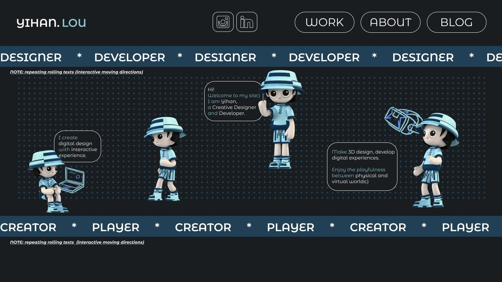
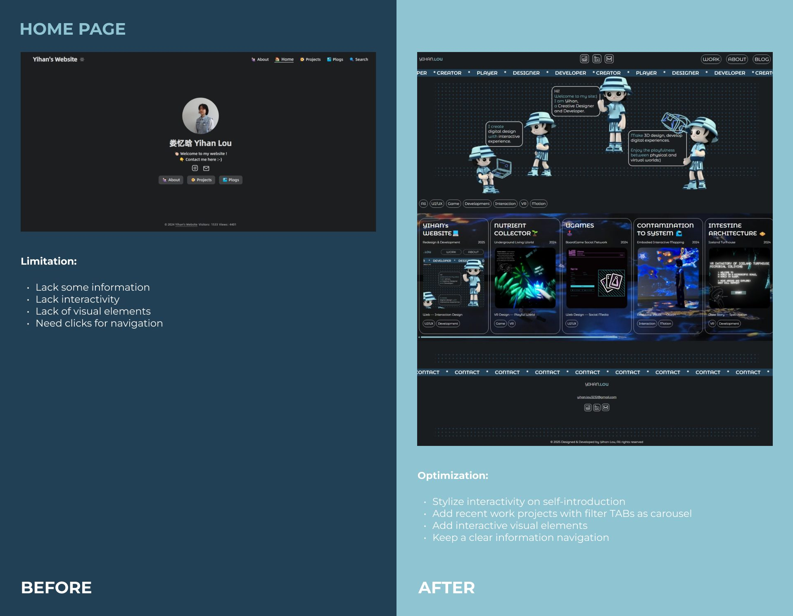
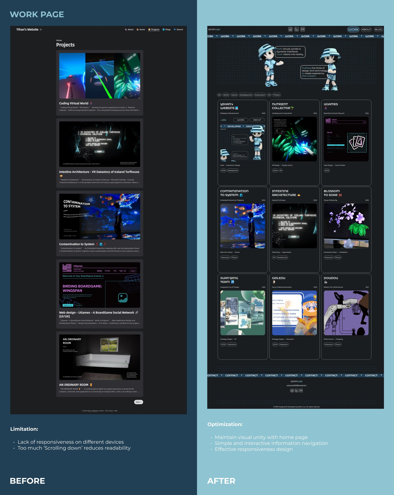
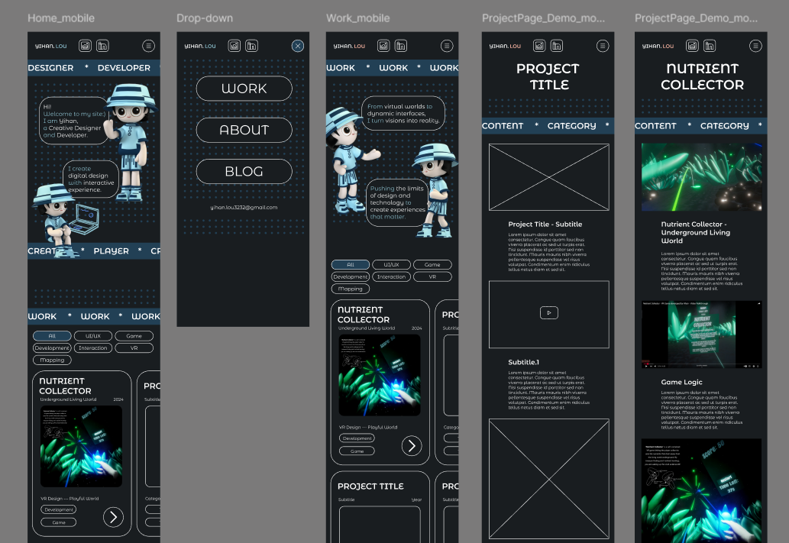
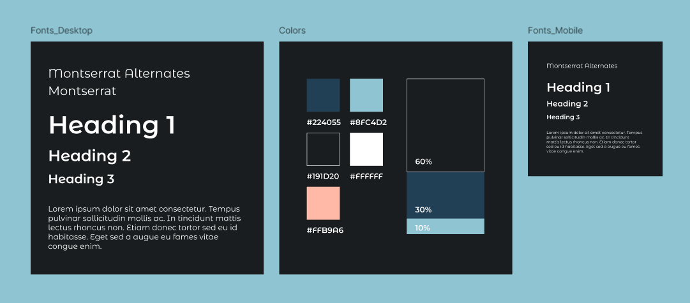

在用 Hugo 静态框架做了多年之后 —— 博客体验扎实，但创作空间极为有限 —— 我用 HTML、CSS 与 JavaScript 从零重建了自己的线上门面，托管在 GitHub Pages 上。这个项目有一处特别：你正在读的这个页面本身就是交付物。本站上的每一个组件，就是下文所描述的结果。
00结论摘要
这个项目是什么，以及它为什么成立此前的网站运行在 Hugo 静态框架之上，博客体验扎实，但创作灵活性有限。因此新版完全用 HTML、CSS 与 JavaScript 从零构建，并托管在 GitHub Pages 上 —— 由此获得了创建更具互动性、更吸引人、视觉上更鲜明体验的自由。
- 这次重建是由一次审计驱动的，而不是由审美偏好驱动的。先对旧的首页与工作页做了审视，并把它们具体的失效之处写下来 —— 信息缺失、缺乏互动、缺少视觉元素、导航需要反复点击、没有响应式、以及相对其承载内容而言过度的滚动。新站上每一个被优化的元素，都在回应一条被点名的局限。
- 互动性被加在真正需要它的地方。自我介绍被做成带有风格的互动部分，近期项目移入以轮播形式呈现的筛选标签页，并在页面中引入互动视觉元素 —— 于是访客是在「操作」内容，而不是从它旁边读过去。
- 可读性被当作一个布局问题来处理，而不是排版问题。旧工作页最主要的弱点是过度的纵向滚动；新版在保持与首页视觉统一的同时，改用标签页来承载信息导航，于是同样的内容占用的纵深小得多，而没有丢掉任何一项。
- 响应式是被明确规定的，而不是碰运气。七个状态 —— 移动端的首页、菜单、工作页与项目页，以及桌面端的首页、工作页与项目页 —— 被分别设计，这正是移动端体验不至于沦为「被压缩的桌面版」的原因。
| 形式 | 个人作品集网站 —— 设计系统、信息架构与前端实现 |
| 年份 | 2025 —— 持续迭代中 |
| 角色 | 设计与开发 —— 审计、布局、设计系统、响应式规范、实现 |
| 技术栈 | 手写 HTML、CSS 与 JavaScript；不使用框架；托管于 GitHub Pages |
| 所替代 | 一个 Hugo 静态站点 —— 利于博客，但限制了互动与视觉设计的空间 |
| 交付物 | 含前后对照的页面审计 · 首页 · 工作页 · 项目页模板 · 响应式规范 · 字体与颜色系统 |
01设计角度
专业方向：布局与信息设计两个核心页面都是与旧版对照着被评判的，而不是孤立地看。所有发现都在画任何新版式之前，被记录为「局限」。这份记录，正是这次改版需要对之负责的东西。
| 首页 —— 局限 | 部分信息缺失 · 缺乏互动性 · 缺少视觉元素 · 导航需要多次点击。 |
| 首页 —— 优化 | 在自我介绍上做风格化的互动 · 加入近期作品项目，并以筛选标签页配合轮播呈现 · 引入互动视觉元素 · 保持清晰的信息导航。 |
| 工作页 —— 局限 | 在不同设备上缺乏响应式 · 需要「向下滚动」的距离过长，降低了可读性。 |
| 工作页 —— 优化 | 与首页保持视觉统一 · 简单且可交互的信息导航 · 有效的响应式设计。 |
每一条局限都被配上一个粒度相同的具体对策 —— 「缺少视觉元素」 变成了插画式自我介绍，「导航需要点击」 变成了筛选标签页，「滚动过多」 变成了标签式作品网格。把审计做到这个细致程度，正是防止「改版」退化为「换皮」的关键：每一处改动都能被指回某件访客真正失去过的东西。


02技术角度
专业方向：前端实现与响应式设计本站是手写的：HTML、CSS 与 JavaScript，没有框架、没有构建步骤，直接从仓库部署到 GitHub Pages。正是这个选择移除了此前框架带来的束缚 —— 这些页面上的每一处交互都是我掌控的代码，而不是主题里的一个开关。
首页
桌面端与移动端分别设计，因此移动端首页仍保留自我介绍的互动性，而不是为了腾出空间把它删掉。
菜单
一个专门的移动端菜单状态 —— 桌面端导航在窄宽度下没有等价形态。
工作页
项目网格针对两个断点分别定义，旧页面的滚动问题正是在这里被解决的。
项目页
每一个案例研究都共用一个模板状态 —— 类别、内容与年份固定在一致的头部，使 12 个项目页面读起来像同一套系统。
筛选标签与轮播
客户端筛选，以及对近期作品的轮播 —— 访客无需一路向下滚动就能抵达任意一个项目。
GitHub Pages
直接从仓库进行静态托管 —— 无需维护服务器，中英双语结构由同一次部署提供服务。

03设计系统
专业方向：字体与颜色系统
| 字体 | Montserrat Alternates 配 Montserrat —— 由单一字族承担 1–3 级标题，使站点的语气从首页一路贯穿到每个案例研究。 |
| 颜色 | 五个取值：#224055 深蓝、#8FC4D2 强调蓝、#191D20 近黑、#FFFFFF 白、#FFB9A6 蜜桃。 |
| 配比 | 60 / 30 / 10 —— 近黑占据 60% 的画面、深蓝 30%、强调蓝 10%。守住这个比例，才让强调色在 12 个各不相同的项目页上始终读起来是「强调」。 |
| 字阶 | 桌面端与移动端字阶分别定义，而不是按比例缩放。 |
每个项目页都带着自己的配色 —— 一个桌游社交平台、一项 VR 服务、一场机械臂演出。站点自身的系统必须能坐落在它们之下而不与之竞争，这正是 60 / 30 / 10 配比与单一字族的用途：外壳保持安静，作品才可以响亮。
本站用于呈现近期作品；此前的旧站上仍存放着一部分归档项目。